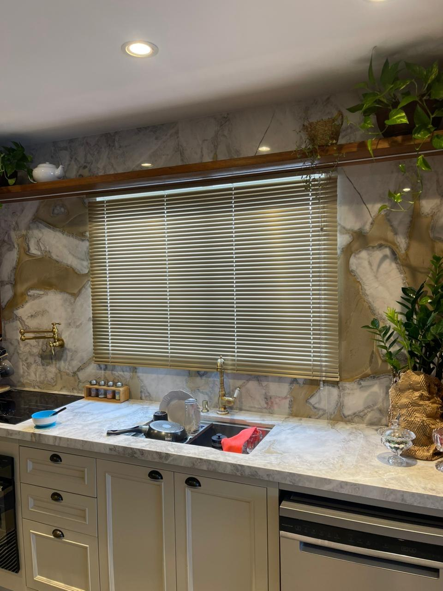
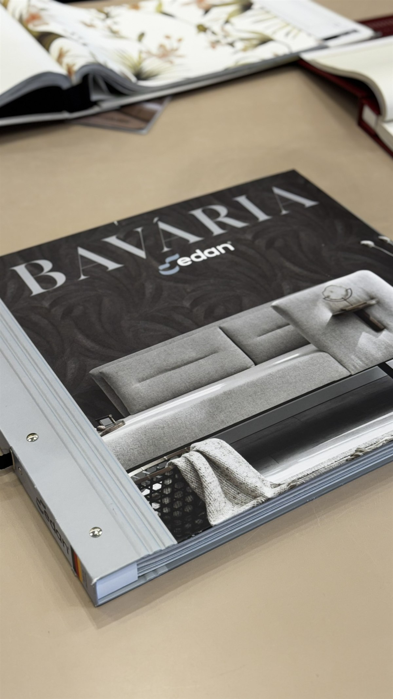
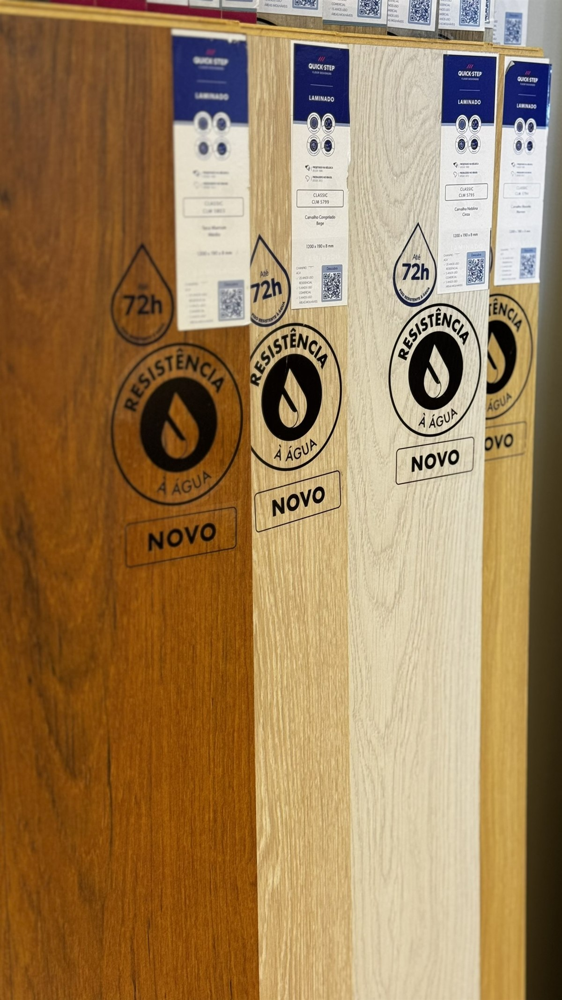

Arquitetura de interiores em Criciúma
Transforme seu espaço com nosso acervo exclusivo de cortinas, persianas e revestimentos. Acabamento impecável e atendimento consultivo especializado.
Nossas Especialidades

Sob medida para vestir seu ambiente com fluidez e requinte.

Controle exato de luz com design contemporâneo.

Texturas inovadoras e estampas para destacar paredes.

Conforto térmico impecável e apelo da madeira.
Experiência Ávila
Nossa equipe de consultores acompanha você com exclusividade desde o entendimento da planta até as finalizações. O verdadeiro luxo está na tranquilidade de um processo perfeito.
Leitura de necessidades, luminosidade e proposta estética do local.
Seleção criteriosa dos tecidos, mecanismos e acabamentos no Showroom.
Exatidão nas medidas, design funcional e elaboração da melhor solução técnica.
Equipe técnica própria com cuidado cirúrgico com a sua casa.
Um portfólio visual dedicado a revelar o potencial das nossas soluções de alto padrão. Ambientes reais, curadoria excepcional.


Visite nosso showroom em Criciúma ou acione nosso especialista agora pelo conforto do seu celular.
Rua Henrique Lage, 1215
Santa Bárbara — Criciúma/SC
Seg à Sex: 08:30–12:00 | 13:30–18:00
Sábados: 08:30–12:00
Dúvidas Frequentes
Reunimos as principais dúvidas dos nossos clientes para tornar sua decisão mais segura e informada.
Sim, e de forma significativa. Cortinas sob medida eliminam folgas, tecidos desnecessários e o aspecto improvisado das peças de prateleira. O resultado é um ambiente mais coeso, sofisticado e com acabamento de projeto de arquitetura de interiores. Além disso, permitem a escolha precisa de tecido, opacidade, mecanismo e ferragem — cada detalhe pensado especificamente para o seu espaço.
A persiana rolô é enrolada internamente em um tubo, criando aparência minimalista e contemporânea — ideal para escritórios, quartos e ambientes de linha limpa. A persiana romana dobra em pregas horizontais ao ser aberta, transmitindo elegância e amplitude, sendo muito valorizada em salas de estar e quartos de alto padrão. A escolha entre elas depende do estilo do ambiente, da funcionalidade desejada e do volume de luz que se quer controlar.
Para quartos, os principais fatores são controle de luz e privacidade. Tecidos blackout bloqueiam quase 100% da entrada de luz — perfeitos para quem tem sono leve ou trabalha em horários alternativos. Para quem prefere uma entrada suave de luz natural, tecidos semi-blackout ou voil duplo são excelentes escolhas. Também levamos em conta a paleta de cores do quarto, a altura do pé-direito e o tamanho da janela para indicar o modelo ideal.
O prazo varia conforme o produto e a complexidade do projeto, mas em geral trabalhamos com um ciclo de 10 a 20 dias úteis entre a medição, fabricação e agendamento da instalação. Para projetos maiores ou com personalizações especiais, o prazo pode ser maior. Nossa equipe informa a estimativa precisa no momento do orçamento, garantindo transparência em todo o processo.
Sim. O piso vinílico é uma das soluções mais indicadas para ambientes úmidos justamente por sua impermeabilidade. Diferente do laminado de madeira, ele não sofre com empolamento ou deformação causados pela umidade. Além disso, é de fácil higienização, antiderrapante e oferece conforto térmico e acústico superiores ao piso frio convencional — tornando-se uma escolha inteligente para cozinhas, lavabos, banheiros e lavanderias.
Depende do tipo e da intensidade da textura. Texturas muito acentuadas exigem preparação prévia da superfície para garantir aderência e uniformidade no resultado final. Nossa equipe avalia o estado da parede antes da aplicação e, quando necessário, indica a preparação correta — que pode incluir lixamento, selamento ou aplicação de massa corrida. Dessa forma, garantimos durabilidade e beleza no acabamento.
Sim. A Ávila Cortinas realiza atendimento e instalação em Criciúma e nas principais cidades da região, incluindo Içara, Siderópolis, Nova Veneza, Forquilhinha, Morro da Fumaça, Urussanga e arredores — em um raio aproximado de 30 km do nosso showroom. Para projetos em outras localidades, entre em contato para verificarmos a disponibilidade de atendimento.
Sim. Todos os nossos produtos são fabricados com materiais de qualidade comprovada e passam por controle rigoroso antes da instalação. Oferecemos garantia tanto nos produtos quanto na mão de obra. Nosso compromisso não termina na entrega — estamos disponíveis para suporte, ajustes e orientações de conservação via WhatsApp, telefone ou diretamente em nosso showroom em Criciúma.
Sua dúvida não está aqui? Fale diretamente com nosso especialista.
Tirar dúvida no WhatsApp